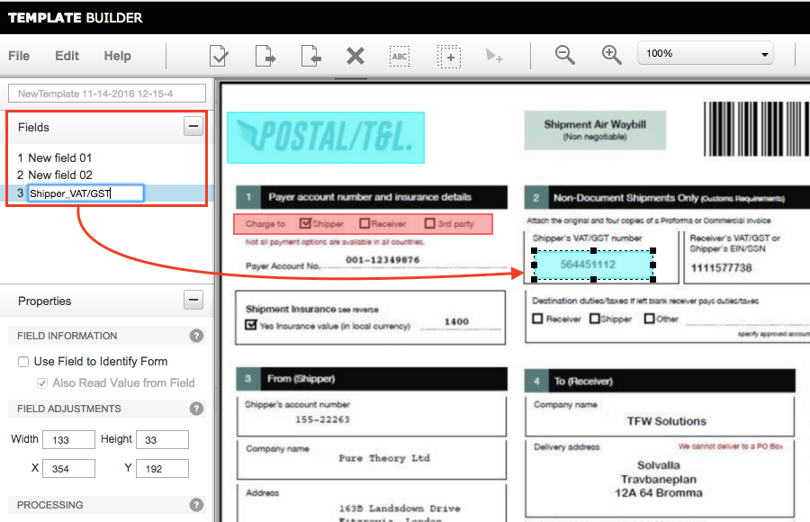
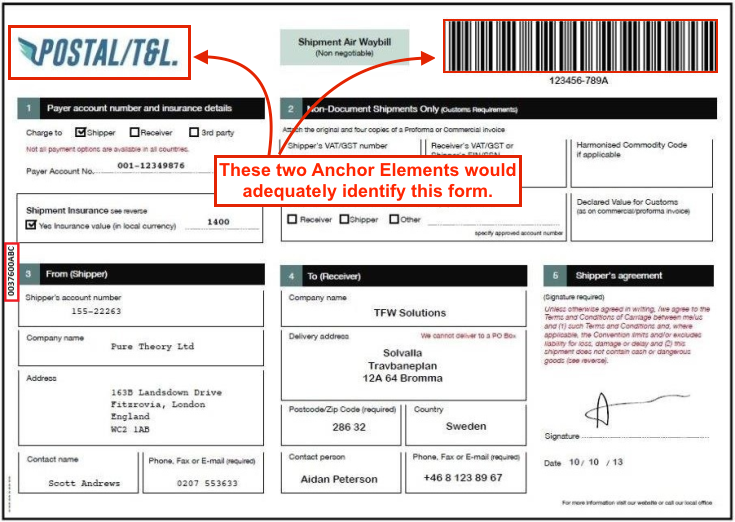

Overview
Template Builder is a web-based tool for defining the information captured by SimulScan and determining how it will be processed and made available to applications. Templates are the key to controlling SimulScan data-capture features and for processing acquired data as needed.
Most acquisition tasks involve capturing data from printed documents, which often vary in size, shape and layout and can be a challenge to accuracy. Templates solve this problem by "teaching" SimulScan about the documents it will encounter and defining how to scan and process data for each instance of a "Templated" document.
 A typical barcode-only form, SimulScan's most common and effective usage scenario.
A typical barcode-only form, SimulScan's most common and effective usage scenario.
Templates work on the principle that the location and type of data in each region of a form (i.e. barcodes, alpha/numeric characters, signatures, etc.) will remain consistent and that only the data will change with each new instance of that form. Templates that uniquely identify each region and data type of a particular form allow SimulScan to capture the data quickly and accurately, and permit developers to map the acquired data to specific fields of their application.
For example, a company that receives regular shipments accompanied with a label like the one above could create a Multi-barcode Template that maps the part number and supplier number from the barcodes in the upper row, and the quantity-received information from the barcode in the lower-left corner to the corresponding fields of an application.
In This Guide
This guide provides step-by-step instructions for using the GUI-based Template Builder tool to create Templates and deploy them to the devices. A familiarity with SimulScan concepts and terminology is required. If necessary, please see the About SimulScan page before proceeding.
Glossary
Anchor Element(s) - one or more unchanging images or other Document attributes (i.e. company logo) that SimulScan can use to determine Document orientation.
Data Type - defines the source (barcode, OCR, etc.) of data being acquired from a Region of a Document.
Document - printed form containing data to be acquired (i.e. a shipping receipt). Documents should be associated with no more than one Template.
Field - region of a form associated with a data type and processing method (i.e. a barcode).
Grouped Regions - refers to sections of a Document that require Fields (i.e. an address) to be grouped logically as an aid to processing the acquired data.
Mixed-Data Mode - captures multiple data types from mixed sources, such as barcodes, alpha/numeric characters, checkboxes and images.
Multi-barcode Mode - used on forms from which only barcode data will be acquired. This is the most common usage scenario.
Multi-Line - acquisition using OCR of multiple lines of alpha/numeric characters (i.e. a complete address).
Multi-Template - a beta feature that allows multiple Templates to be treated as one to simplify workflow.
OCR - Optical Character Recognition, a processing mode for acquiring alpha/numeric characters.
OMR - Optical Mark Recognition, a processing mode for acquiring binary (yes/no) data from checkboxes.
Picture - graphical image to be acquired as a file (i.e. .jpg file).
Secure Storage - the online area accessible only by credentialed user(s) in which Templates are stored.
Signature - generally of the recipient of a shipment (captured as an image).
Single-Line - acquisition using OCR of a single line of alpha/numeric characters (i.e. a product number).
Target, Structured - a Document with a layout that doesn't change from one instance to another.
Target, Unstructured - a Document with no fixed layout, or a Document that has not been defined with a Template.
Template - XML document that defines the fields (Regions) of a shipping receipt or other document to be scanned. Templates are always associated with exactly one Document.
Template Persistence - keeps Templates in sync between a development host and the Template Builder host server.
Validation - a beta feature that checks whether the Fields and their properties are correct for a given Document before a Template is deployed to devices.
Using Template Builder
Template Builder is free but registration might be required. Zebra customers, partners and ISVs with access to Partner Central can use their existing credentials for access. Others must register using the instructions below.
Note: SimulScan can be used without a License if the requirement is to scan only barcodes through an app using DataWedge. A SimulScan License is required for access to OCR and OMR features and/or SimulScan APIs. For more information, please see the Licensing page.
Quick Steps
- Log in, Select the Template Type.
- Upload an image of the Document to be scanned (.bmp, .jpg, .png or PDF).
- Identify regions of the Document and the data types (barcodes, text, etc.) of each.
- Save work often. Template Builder does not automatically save changes.
- Download the completed Template(s) to the development host (local PC).
- Copy the Template file(s) to the device that will be performing the scans.
- If applicable, select the Template from within the scanning app.
Create an Account
1. Visit the Zebra SimulScan registration page, follow prompts to create a free account and enter all requested information. Once an account is created, Zebra administrators will send login information to the registered address. Zebra recommends planning ahead; this process could take several days.
2. Point a browser to simulscan.zebra.com and enter the login credentials. A screen appears similar to the image below:

Select Template Type
3. Select the desired template type:
Structured Targets - for layouts that do not change from one instance to another. Select this option to:
- Scan barcodes
- Recognize characters (OCR)
- Recognize check marks (OMR)
- Capture Signature(s) or other images
- Extract other key fields of interest
Unstructured Targets - for layouts that change or that have not been defined with a Template. Select this option to:
- Scan multiple barcodes simultaneously
- Use OCR for a single line of alpha/numeric text
- Use OCR for a multiple lines of alpha/numeric text
3a. If selecting Structured Targets:
- An Open... dialog appears
- Select the image (.bmp, .jpg, .png or PDF) of the Document for which to create the Template**
- Minimum image resolution is 640x480 pixels
- Maximum image resolution is 6000x6000 pixels
- Maximum image file size is 5MB
- For a PDF, select page number from the drop-down (if necessary)
3b. If selecting Unstructured Targets:
- Select "Multi-barcode" to capture barcodes or "OCR" for alpha/numeric text:

If Multi-barcode is selected upload an image WHICH MAKES NO SENSE for unstructured targets
a. When selecting OCR, a static image is automatically created (as below). b. If Multi-line OCR is required, check the approproate box (arrow). c. Configure other settings as required (see Step 7 for details).
Save the template and skip to Step 7.
4. Save the Template to proceed using alpha/numeric characters:

Note: The Template name prefix "Default -" is reserved for system use. All other alpha/numeric combinations are acceptable.
Warning: Do not attempt to modify the Template file by hand. Templates contain machine-generated XML stored in Base64-encoded files, and are not intended to be edited manually.
Identify Document Regions
Skip to Step 7 for Unstructured Targets.
After uploading an image of the target Document...
5. Confirm that the "AutoCrop" feature (enabled by default) has accurately identified the Document boundaries:

To adjust, click "Disable AutoCrop" and set Blue bounding box so that it's just outside the borders of the Document. Click "OK" when done. This serves as the base reference for identifying the form and processing its contents.
6. Drag a box from the upper-left corner to the lower-right corner of each Region of the Document that contains data to be acquired:

Alternative ways to create Fields:
- Select Edit --> Create New Field, enter a name for the field and draw a box around the corresponding Region.
- Click the Add Field button (arrow, below), enter a name and draw a box around the corresponding Region.
Fields not specifically named will be assigned a generic name (as shown). These can be edited later as desired (see Modify a Template).
Provide (or confirm) the following required settings for each Field created:
- A name for the field, if desired.
- Properties (length/width and X-Y coordinates)
- The required Processing mode (barcode, OCR, etc.)
- Processing-mode settings (decoder type, text-type, etc.)
- Select at least three "Anchor Elements" (explained below)
Save work often! Template Builder does not automatically save changes. Unsaved changes will be lost if the screen is dismissed or the session timeout is reached.
Select Anchor Elements
In addition its use of Document border dimensions, SimulScan uses Fields, company logos or other unique attributes of a Document to positively identify it and determine its orientation relative to the scanner (i.e. whether it's upside down). Optionally, Anchor Elements can contain data to be acquired, such as a barcode or image. Zebra recommends that at least two Anchor Elements be identified in accordance with the guidelines below.
Anchor Element Guidelines:
- Select two or three Fields per document as Anchor Elements.
- Anchor Elements should be spread across the top, bottom and side(s) of the Document.
- For Structured Targets, static fields such as logos and preprinted content work best.
- For barcode-only targets, barcodes with a fixed location on instances of a label work best.
- For fixed barcodes, select the “Barcode’s location is fixed” option in the Properties panel.
- Anchor Elements need not contain data to be acquired ("Also Read Value from Field" is optional).

For example, in the Postal T&L Document above, the logo in the upper-left corner and the barcode in the upper-right would identify this form adequately for SimulScan to activate its template. When using a fixed barcode as an Anchor Element, be sure to select the “Barcode’s location is fixed” in the Properties panel, as below:
 This attribute appears only in "Structured Targets" Templates that use non-postal symbologies.
This attribute appears only in "Structured Targets" Templates that use non-postal symbologies.
Zebra recommends selecting the fixed-location attribute to help improve processing time whenever it is known that a barcode will be in a consistent location.
Configure OCR Settings
7. If not using OCR, Skip to Step 8.
For OCR regions, it's important to configure parameters according to the expected input to maximize the accuracy of character recognition.
Character subsets - identifies the type of text coming that will be acquired:
- All caps alphabets - text will contain all uppercase letters
- All small alphabets - text will contain all lowercase letters
- Only Alphabets - text contain only alpha characters (upper- and lowercase)
- All digits - text contain only numbers
- Alphanumeric (default) - text contain a combination of letters and numbers
- Enter custom sub string set here - enter information about custom characters in the Custom Character Set text box
Regular Expressions - used when it is known that the data will be presented in a particular pattern (i.e. MM/DD/YYYY), the pattern can be specified as a Regular Expression according to the table below.
Zebra recommends using this option only if the format defined can be guaranteed for the region.
SimulScan references the Perl Compatible Regular Expressions (PCRE) library for regular-expression pattern matching. Setting the character subset is easy but coarse; setting the regular expression is complex but precise. Specifying both the subset and the regex great narrows the range of possible candidates. Learn more by reading the Perl RegEx Man Pages.
Word Check - enables a spell-check in the selected language. Use on regions known to contain only words.
Language - English is the default. Switching to European will recognize characters typically found in European languages such as the digraph, circumflex and umlaut.
Deploy Templates
8. When finished with settings, select File -> Download Template to download a copy to the local development host:

The Template can now be deployed to scanning devices.
The deployment location of Templates to the device varies depending on whether SimulScan is to be used through Zebra's DataWedge service or through an organization's own app written with EMDK and using the SimulScan APIs.
Zebra recommends validating Templates before deployment. While this feature is still currently in beta, validation can provide useful information about the completeness of a Template and its Field properties and settings.
Methods of Template deployment:
- Manually via USB cable to the device using the Android Debug Bridge (ADB)
- Programmatically through EMDK for Android development tools
- Remotely using StageNow and the UI Manager service
- Remotely through a company's own mobile device management (MDM) system (if supported by that system)
Alternatively, Templates saved to the /<accountID>/templates/release/ folder on the Template Builder web site can be accessed programmatically through EMDK APIs using the FetchTemplate() method. The path will appear similar to the image below:
If using SimulScan through DataWedge, deploy Template(s) to the device in:
/enterprise/device/settings/datawedge/templates/folder
If using SimulScan through EMDK, deploy Template(s) to
/Android/data/or any other folder accessible to the app
Note: All files deployed within the /enterprise/ folder will persist on the device following an Enterprise Reset.